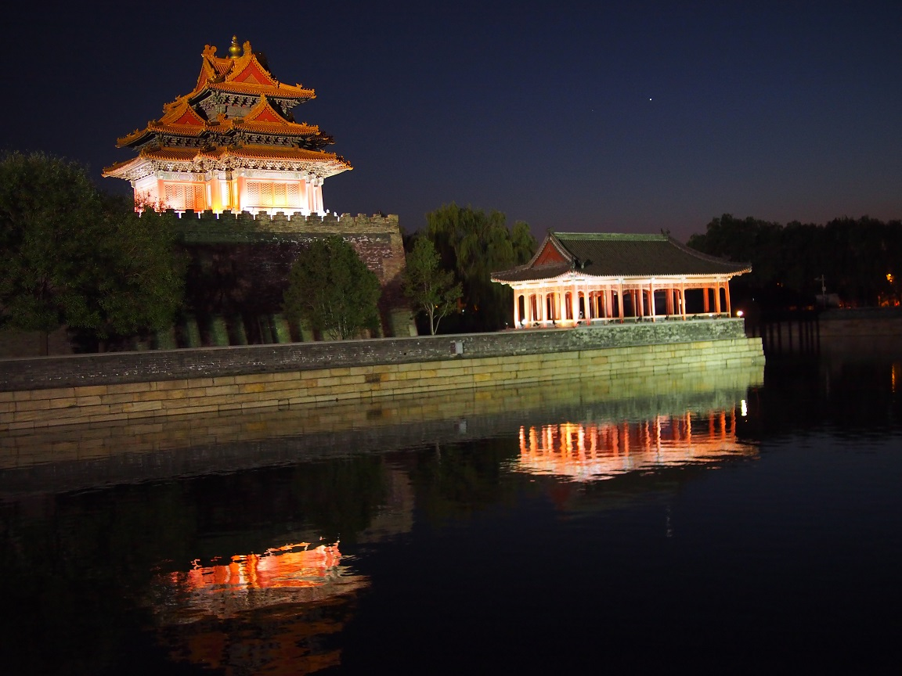

La cité interdite
Véritable petite ville, son nom provient du fait que son entrée était strictement interdite à tout étranger. C'est sous l'empereur Yongle de la dynastie Ming que la construction de la Cité Interdite commença en 1406. La Cité interdite, née sous l'impulsion de l'impitoyable Ming Yongle, fut la résidence de vingt-quatre empereurs, de 1420 à 1911. Devenue aujourd'hui un musée, elle reste l'un des sites les plus démesurés et mystérieux du monde, tout y étant signification et représentation


son nom complet est la « Cité pourpre interdite » (traduction du chinois zǐjìn Chéng, 紫禁城), en référence à l'étoile nommée Zǐwēi Xīng (紫微星, la « petite étoile violette ») dans l'astronomie chinoise, c'est-à-dire l'étoile polaire de l'astronomie occidentale. En effet, comme le palais impérial se trouve au centre de Pékin et représentait le centre administratif de l'État, on lui donna un nom évoquant l'étoile qui est au centre de la rotation du ciel ;
le nom le plus courant à l'étranger est « Cité interdite », qui vient du fait qu'en tant que résidence des empereurs chinois, de leurs familles et de ceux qui étaient à leur service, son accès était interdit au peuple ;
en Chine actuellement, ce site est le plus souvent appelé Gùgōng (故宫), ce qui signifie « l'ancien palais »1 ;
le musée qui est abrité dans la « Cité interdite », ou musée du palais impérial, abrite plusieurs musées dont un musée de céramique et une pinacothèque ; il reste traditionnellement dénommé « musée du palais »2.